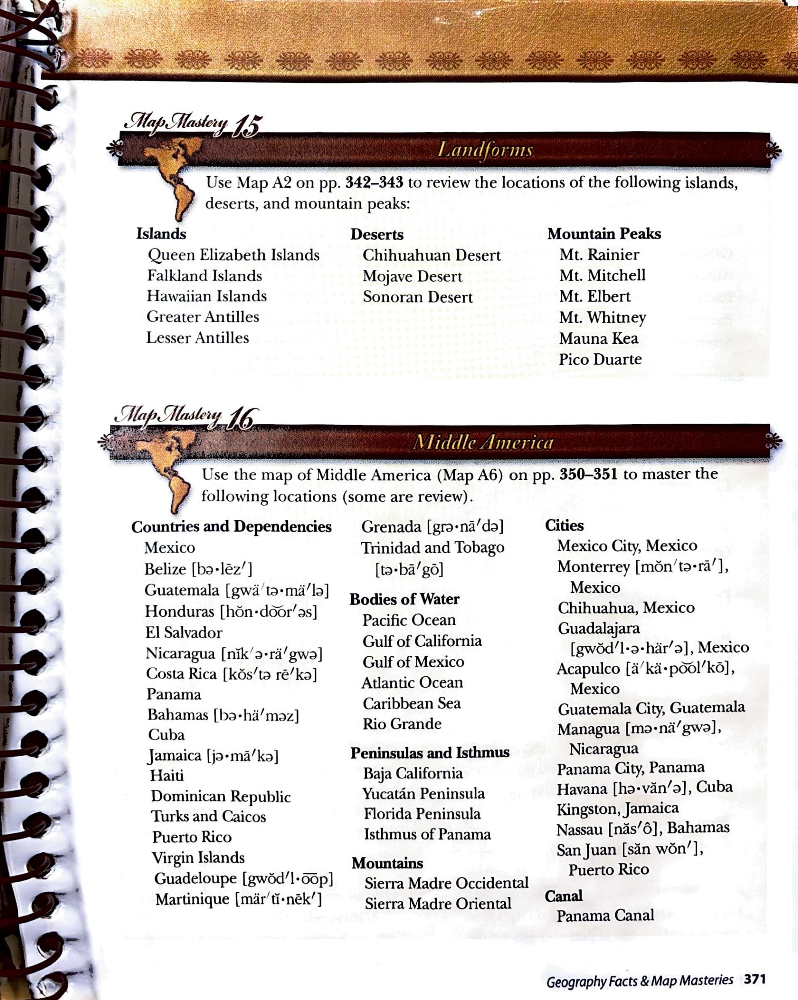

Map Mastery 16 · Middle America
Map Mastery 16 · Middle America
Use the map of Middle America (Map A6) on pp. 350–351 to master the following locations (some are review).
Countries and Dependencies
- Mexico
- Belize
- Guatemala
- Honduras
- El Salvador
- Nicaragua
- Costa Rica
- Panama
- Bahamas
- Cuba
- Jamaica
- Haiti
- Dominican Republic
- Turks and Caicos
- Puerto Rico
- Virgin Islands
- Guadeloupe
- Martinique
- Grenada
- Trinidad and Tobago
Bodies of Water
- Pacific Ocean
- Gulf of California
- Gulf of Mexico
- Atlantic Ocean
- Caribbean Sea
- Rio Grande
Peninsulas and Isthmus
- Baja California
- Yucatán Peninsula
- Florida Peninsula
- Isthmus of Panama
Mountains
- Sierra Madre Occidental
- Sierra Madre Oriental
Cities
- Mexico City, Mexico
- Monterrey, Mexico
- Chihuahua, Mexico
- Guadalajara, Mexico
- Acapulco, Mexico
- Guatemala City, Guatemala
- Managua, Nicaragua
- Panama City, Panama
- Havana, Cuba
- Kingston, Jamaica
- Nassau, Bahamas
- San Juan, Puerto Rico
Canal
- Panama Canal
Multiple-choice practice
Use the study list and linked Atlas map to choose your answers. These questions are an adaptation for Harlan; they are not printed questions from the source.
Original source page 371
Location names, headings and instructions were compared with the supplied source page. Source-era classifications are preserved. Pronunciation-guide glyphs remain in the original image and are not transcribed into the list.
Open full-size source page